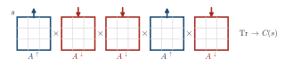
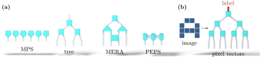

Page 4 of 9 of this session
10.4 Tensor networks for machine learning and the many-body wavefunction as a big-data problem
Can the matrix product state, which we built to compress a wavefunction, be used as a machine-learning model? We will now see that it gives each of the \(2^L\) coefficients from \(L\,d\,D^2\) numbers in (10.6), which is exact only for a state whose entanglement fits in the bond dimension \(D\). Then we will see that a classifier of images built in the same way is a linear map on the \(2^N\)-dimensional space of the pixels.
\[|\psi\rangle = \sum_{s_1,\dots,s_L} C(s_1,\dots,s_L)\, |s_1,\dots,s_L\rangle, \tag{10.2}\]
This is the state of \(L\) spins of Section 10.3a, written with its \(2^L\) coefficients \(C(s_1,\dots,s_L)\) in the basis of the spin configurations \(|s_1,\dots,s_L\rangle\).
This follows the logic of the previous section in the reverse direction. Instead of using a machine-learning architecture to solve a many-body problem, we treat the many-body wavefunction itself as a big-data problem. Then we use a many-body compression technique, which is tensor networks, as a machine-learning architecture.
Let us recall the matrix product state (MPS) ansatz, which we built in Section 7.4. Instead of storing all the \(2^L\) coefficients of (10.2) independently, we assume that they factorize into a product of matrices, one for each site.
A matrix product state writes each coefficient as
\[C(s_1,\dots,s_L) = \mathrm{Tr}\left[A^{s_1} A^{s_2}\cdots A^{s_L}\right], \tag{10.6}\]
with one \(D\times D\) matrix for each site and each local state. The state has \(L\,d\,D^2\) numbers, linear in \(L\), and the bond dimension \(D\) is ours to choose.
Here for each physical value of \(s_i\), for example spin up or spin down, there is a different \(D\times D\) matrix \(A^{s_i}\). The size \(D\), which is called the bond dimension, is a free parameter that we choose. The number of free parameters in (10.6) scales as \(L \times d \times D^2\), with \(d\) the dimension of the local Hilbert space, so it is linear in the system size and not exponential, as Schematic 10.4 shows for one configuration. This is the same compression idea as the NNQS of Section 10.3, but the parameters are matrix elements instead of network weights.
Equation (10.6) is the periodic form, closed with a trace. The open form (7.5) of Section 7.4 has a vector in place of a matrix on the first and on the last site, and the problem of this page uses it.
The steps Counting the numbers of a matrix product state
Let us take the simplest case first, \(D=1\). Each \(A^{s_i}\) is then a number \(a_i(s_i)\), the trace does nothing, and
\[C(s_1,\dots,s_L)=a_1(s_1)\,a_2(s_2)\cdots a_L(s_L),\]
which is a product state. Each site has \(d\) numbers, one for each local state, so the state has \(L\,d\) numbers, \(200\) for \(L=100\) and \(d=2\).
For \(D>1\) each site has \(d\) matrices, and each matrix has \(D^2\) entries, so the state has
\[L\times d\times D^2\]
numbers. For \(L=100\), \(d=2\) and \(D=10\) this is \(20000\), against \(2^{100}\approx1.3\times10^{30}\) coefficients of the full table. One coefficient is computed by choosing the matrix of each site from the configuration, multiplying the \(L\) matrices, which takes \(L-1\) products of \(D\times D\) matrices, and taking the trace.
The count is small only for a state with little entanglement. A generic state of an even number \(L\) of spins has the Schmidt rank \(2^{L/2}\) at the middle cut, \(32\) for \(L=10\), so it needs a bond dimension that grows exponentially with \(L\).

The same compression can be generalized beyond the one-dimensional geometry of the MPS. A tree tensor network puts the same matrices in a tree instead of a chain. The multiscale entanglement renormalization ansatz (MERA) adds extra layers of coarse-graining on top of a tree structure. Projected entangled pair states (PEPS) generalize the whole construction to a two-dimensional grid, and Section 7.11 gives both MERA and PEPS. For a ground-state search these architectures are not equivalent, since an MPS is much easier to optimize than a PEPS. This is the reason why MPS works well for one-dimensional problems, while two-dimensional problems are often still hard. However, if we only want a flexible function of a high-dimensional input with an efficient parameterization, as in machine learning, the difference between the architectures matters much less, and any of them can be used.
This is a direct reuse of the architectures of Session 7, and not only an analogy. The same matrix product states, tree tensor networks, MERA and PEPS that we built there to compress ground-state wavefunctions are used here without change as function approximators. This approach has a name, which is “quantum-many-body-inspired machine learning,” and a clear example of it is image classification with tensor networks.
We map each pixel of an image with \(N\) pixels to a two-dimensional vector, for example white \(\to\) spin up and black \(\to\) some other reference direction. Then we take the tensor product of all the \(N\) pixel vectors, which gives a single vector in a \(2^N\)-dimensional space. This is the same exponentially large space where a many-body wavefunction with \(N\) spins lives. The classification task then becomes the search for a linear operator on this \(2^N\)-dimensional space that maps each image to its one-hot label.
The classifier gives for the label \(\ell\) the output
\[f_\ell(x)=W_\ell\cdot\big(\varphi(x_1)\otimes\varphi(x_2)\otimes\cdots\otimes\varphi(x_N)\big),\]
with \(\varphi(x_i)\) the two-dimensional vector of the pixel \(i\) and \(W_\ell\) a vector of the \(2^N\)-dimensional space. The output is linear in the tensor product of the pixels, and the tensor network writes \(W_\ell\) with few numbers.
A tensor network, and here a tree tensor network works well, is the efficient and structured parameterization of such a linear operator that (10.6) and its generalizations already gave us. We apply the tensor network to the tensor-product image, and then a final small tensor that projects down to two output numbers. This gives the same structure as the classification of cats and dogs in Section 10.2. Now the worked example is purse versus shirt, and the tensor product of the pixels takes the place of the flattened input matrix. Figure 10.3 shows the four geometries as tensor diagrams, and then the classifier built from one of them.

This is not a toy result. The Fashion-MNIST dataset is a standard benchmark of images of clothes with ten labels. On it a tree tensor-network classifier of this kind reaches 95.38% accuracy on the training set and 88.97% on the test set, in this article. This is comparable with conventional neural network architectures on the same task. The general point is the same as in Section 10.3, in the other direction. A variational architecture that was built to compress many-body wavefunctions is, in mathematical terms, one more kind of neural network, and we can use it directly as one.
A matrix product state writes each coefficient as
\[C(s_1,\dots,s_L) = \mathrm{Tr}\left[A^{s_1} A^{s_2}\cdots A^{s_L}\right].\]
Each site has \(d\) matrices \(A^{s_i}\) of size \(D\times D\). The chain has \(L=100\) sites, \(d=2\) and \(D=10\). How many parameters does the state have?
Show the answers
- A. ✗ False
This is false. The number \(2^{100}\approx1.3\times10^{30}\) is the full table. The MPS with \(D=10\) has only \(20000\) numbers, which is \(26\) orders of magnitude less.
- B. ✓ True
This is true. Each of the \(100\) sites has \(d=2\) matrices of size \(10\times10\), which gives \(100\times2\times100=20000\). The count is linear in \(L\) and quadratic in \(D\).
- C. ✗ False
This is false. The count \(L\,d=200\) is the case \(D=1\), which is a product state. It cannot describe an entangled state such as the singlet of two spins, which needs \(D=2\).
In a matrix product state, each site \(i\) has its own \(D\times D\) matrices \(A^{s_i}\). There is one matrix for each value of \(s_i\). Which expression gives the coefficient \(C(s_1,\dots,s_L)\)?
Show the answers
- A. ✗ False
This is false. Each trace is one number for each site, so this is a product state. For two sites it gives \(C(\uparrow\downarrow)\,C(\downarrow\uparrow)=C(\uparrow\uparrow)\,C(\downarrow\downarrow)\), while the singlet \((|\uparrow\downarrow\rangle-|\downarrow\uparrow\rangle)/\sqrt2\) has \(-1/2\) on the left and \(0\) on the right.
- B. ✓ True
This is true. The matrices of neighboring sites are multiplied, so the bond index joins the sites, and the state can be entangled. For two sites with \(D=2\) it gives \(\sqrt2\) times the singlet, with \(A^{\uparrow}=\mathrm{diag}(1,0)\) and \(A^{\downarrow}=\mathrm{diag}(0,1)\) on the first site and \(-\mathrm{diag}(0,1)\) and \(\mathrm{diag}(1,0)\) on the second. The same pair on both sites would give \(C(\uparrow\downarrow)=C(\downarrow\uparrow)\), since a trace does not change when the two matrices are swapped.
- C. ✗ False
This is false. For two sites it gives \(C(\uparrow\uparrow)+C(\downarrow\downarrow)=C(\uparrow\downarrow)+C(\downarrow\uparrow)\). So the product state \(|\uparrow\uparrow\rangle\), with \(C(\uparrow\uparrow)=1\) and the other three coefficients zero, cannot be written in this way.
A classifier of images with \(N\) pixels gives the output
\[f(x)=W\cdot\big(\varphi(x_1)\otimes\cdots\otimes\varphi(x_N)\big),\]
where \(\varphi(x_i)\) is a vector with two components for the pixel \(i\). A tree tensor network gives the weights \(W\). Which statement is correct?
Show the answers
- A. ✗ False
This is false. There is no activation function in the contraction. Replacing the feature vector \(\varphi(x_i)\) of one pixel by \(2\varphi(x_i)\) multiplies the output by \(2\) exactly, so it is multilinear.
- B. ✓ True
This is true. The output is a contraction of the weights with the tensor product of the pixels, so it is linear in it. The tree tensor network writes this map with few parameters.
- C. ✗ False
This is false. For \(N=100\) pixels, \(2^N\approx10^{30}\) parameters would not fit in any computer. A tree network of bond dimension \(10\) has only about \(10^4\) to \(10^5\) parameters.
Show that the singlet \((|\uparrow\downarrow\rangle-|\downarrow\uparrow\rangle)/\sqrt2\) of two spins cannot be written as a matrix product state with \(D=1\), and find matrices with \(D=2\) that give it.
Solution
With \(D=1\) the coefficients are products of numbers, \(C(s_1,s_2)=a^{s_1}b^{s_2}\). Then
\[C(\uparrow\downarrow)\,C(\downarrow\uparrow)=a^\uparrow b^\downarrow a^\downarrow b^\uparrow=C(\uparrow\uparrow)\,C(\downarrow\downarrow)\]
for any choice of the four numbers. For the singlet the left side is \(-1/2\) and the right side is \(0\), so no choice works.
With \(D=2\) we use the open form of a chain of two sites, where the first site has a row vector and the second site a column vector, so that \(C(s_1,s_2)=a^{s_1}\cdot b^{s_2}\). This is not the trace of (10.6), which closes the chain. We take \(a^\uparrow=(1,0)\), \(a^\downarrow=(0,1)\), \(b^\uparrow=(0,-1)\) and \(b^\downarrow=(1,0)\), which give
\[C(\uparrow\uparrow)=0,\qquad C(\uparrow\downarrow)=1,\qquad C(\downarrow\uparrow)=-1,\qquad C(\downarrow\downarrow)=0,\]
and with the factor \(1/\sqrt2\) this is the singlet. With the trace form, the diagonal matrices \(\mathrm{diag}(1,0)\) and \(\mathrm{diag}(0,1)\) on the first site and \(-\mathrm{diag}(0,1)\) and \(\mathrm{diag}(1,0)\) on the second give the same four numbers.
The singlet has two Schmidt values \(1/\sqrt2\) across the cut between the two sites, and a bond of dimension \(D\) carries at most \(D\) of them in the open form. This is why the bond dimension that a calculation needs grows with the entanglement of the state, and why a product state, with one Schmidt value, needs only \(D=1\).